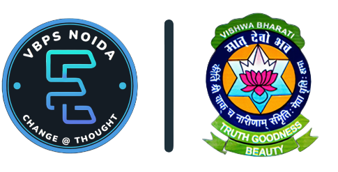

About
Enovators is the IT Club of Vishwa Bhararti Public School, Noida - founded in 2003 - where students brainstorm in different IT activities like programming, web designing, quizzing, graphic designing, etc. The club is open to students from classes 9 to 12, in the school.
The motto of Enovators is to nurture children with varying talents in the field of IT - making them excel in their respective areas of interest. Till date, students from Enovators have won many laurels in numerous Inter-school, State Level and National Level events, and even at the International platform.
Every year, as part of Vishwa Bharati Public School's Annual Inter-school fest, Resplendence, Enovators also holds it own IT fest, where students from dozens of schools in Delhi and NCR represent their schools in multiple activities.
